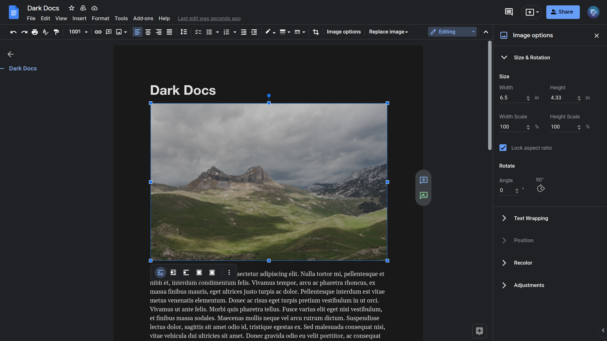
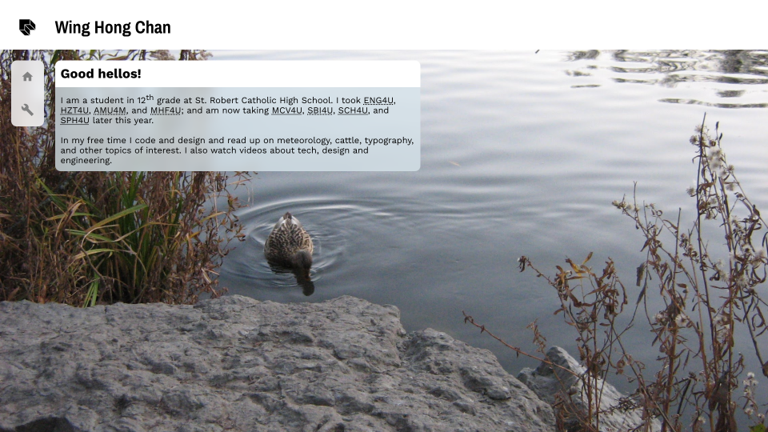
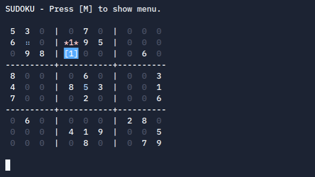
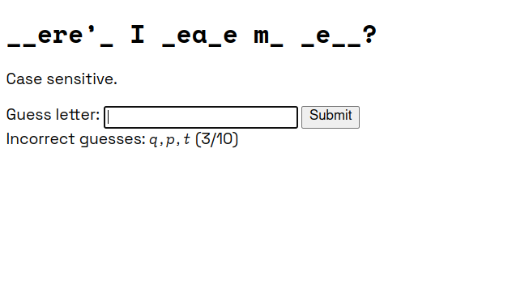

Wing Hong Chan
Good hellos!
I am a student in 12th grade at St. Robert Catholic High School. I took ENG4U, HZT4U, AMU4M, and MHF4U; and am now taking MCV4U, SCH4U, and SPH4U later this year.
In my free time I code and design and read up on meteorology, cattle, typography, and other topics of interest. I also watch videos about tech, design and engineering.
In my free time I code and design and read up on meteorology, cattle, typography, and other topics of interest. I also watch videos about tech, design and engineering.
Work
I always find room to improve the things I make. Here are my projects where I believe that I have satisfied the goal.

Dark Docs
A dark mode stylesheet for the Google Docs online interface. It was built out of necessity for working long hours on essays, and it is frequently updated. I have been making similar stylesheets since 7th grade.

This Website
My first self-guided website project, I use my knowledge from online courses and web surfing to showcase what I can do and my visual design preferences. It uses features of modern browsers to improve load times.

Sudoku in the console
Before making websites, all my programs were used in the console. This game of sudoku written in C# contains clear visuals, WASD key navigation, and error checking to try out on three playable boards.
